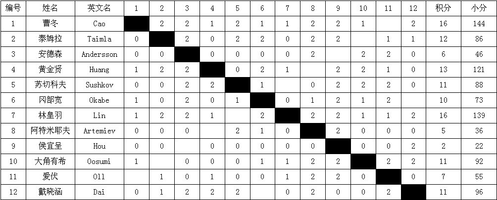

世锦赛截至第十轮的成绩
#1 世锦赛截至第十轮的成绩作者：我就不信注册不上 发表时间：2011-8-10 2:55:28

表中为了避免小数碍眼，采用2-1-0计分；同样为了避免小数碍眼，计算的小分按照所胜对手积分的2倍+所和对手的积分总和计算。与标准循环制计分方式相比，真实积分应为本表中积分的一半，真实小分应为本表中小分的1/4。只是倍数差距，不影响相互比较
经过演算预测，最后一轮的曹、林争冠形势如下：1、林胜，林冠军；2、林负，曹冠军；3、林和+曹胜，曹冠军；4、林和+曹负，林冠军；5、林和+曹和+戴晓涵胜（或和）冈部宽，曹冠军；6、林和+曹和+戴晓涵负冈部宽，曹、林积分、小分、胜局、直胜全部相同，需加赛
自行制作，自行演算，仅供参考
［ 中中 于 2011-8-10 3:36:27 时花20金币送鲜花一朵］
［ 中中 于 2011-8-10 3:36:35 时花20金币送鲜花一朵］
［ 中中 于 2011-8-10 3:36:43 时花20金币送鲜花一朵］
［ 极地剑客 于 2011-8-10 4:01:35 时花20金币送鲜花一朵］
［ 五子痴 于 2011-8-10 10:20:54 时花20金币送鲜花一朵］
［ 五子痴 于 2011-8-10 10:21:05 时花20金币送鲜花一朵］
［ 五子痴 于 2011-8-10 10:21:11 时花20金币送鲜花一朵］
［ 五子痴 于 2011-8-10 10:21:16 时花20金币送鲜花一朵］
［ 五子痴 于 2011-8-10 10:21:24 时花20金币送鲜花一朵］
#2 Re:世锦赛截至第十轮的成绩作者：极地剑客 发表时间：2011-8-10 4:01:29
有了下面的解说就通俗易懂了。。。#3 Re:世锦赛截至第十轮的成绩作者：冰魔 发表时间：2011-8-10 7:02:46
算的不对吧？？#4 Re:世锦赛截至第十轮的成绩作者：我爱江俊男 发表时间：2011-8-10 7:57:31
算的不对。。。#5 Re:世锦赛截至第十轮的成绩作者：我是裁判 发表时间：2011-8-10 8:28:37
???上面的分析看不懂#6 Re:世锦赛截至第十轮的成绩作者：茗弈妙手 发表时间：2011-8-10 8:36:11
官方正式积分表的链接在哪。。。#7 Re:世锦赛截至第十轮的成绩作者：无尽 发表时间：2011-8-10 8:38:42
分析的基本没问题吧，官方还没出来。
决定最后冠军归属的，除了曹林各自对局，还有就是冈部的最终积分了，目前小分林只比曹略低一些，但是最后如果曹林都胜，苏切5.5分比Oll3.5分高出2分，所以林就能反超；如果和的话还要看看冈部。
单循环看小分最简单的逻辑就是大分同分情况下输(和)弱赢强小分比输强羸弱拿得多。这场比赛，曹林从其他对手得分相同的情况下（目前就看最后一轮，假设都胜，差异就只在2人）：林赢了冈部，和了Oll，曹赢了Oll（假设结果），和了冈部，冈部比Oll最终积分高，林得到的小分自然要多些。
［此帖子已被 无尽 在 2011-8-10 8:47:11 编辑过］
#8 Re:世锦赛截至第十轮的成绩作者：yidefei 发表时间：2011-8-10 8:51:28
能出现加赛的情形不？那可是百年难得一遇呀！#9 Re:世锦赛截至第十轮的成绩作者：游戏人间 发表时间：2011-8-10 8:55:11
现在的中国五子棋已经有点90年代初期日本五子棋独领风骚的态势了。。。#10 Re:世锦赛截至第十轮的成绩作者：励精 发表时间：2011-8-10 9:05:55
祈祷曹胜，苏切阻击林。
#11 Re:Re:世锦赛截至第十轮的成绩作者：傀儡 发表时间：2011-8-10 9:06:33
引用：
原文由 游戏人间 发表于 2011-8-10 8:55:11 :
现在的中国五子棋已经有点90年代初期日本五子棋独领风骚的态势了。。。

#12 Re:世锦赛截至第十轮的成绩作者：冰魔 发表时间：2011-8-10 9:14:55
林皇羽对手分比曹冬高。最后轮，命运在苏切手里
#13 Re:世锦赛截至第十轮的成绩作者：慕容晓文 发表时间：2011-8-10 9:22:27
话说回来，不论是林还是曹冬，如果最终结果是11轮不败却没夺冠，不论是因为小分低还是因为大分低都是一件让人觉得悲惨的事情
#14 Re:世锦赛截至第十轮的成绩作者：茗弈妙手 发表时间：2011-8-10 9:34:39
有一点感觉不对：为什么林皇羽胜了就一定夺冠？苏切科夫的分数确实比爱伏高很多，单从这一点来看，最后一轮如果双方都取得了胜利，那么林皇羽凭借苏切一人就能小分反超曹冬。但是，有一点，双方的对手还有其他人啊，假如曹冬赢过的对手这一轮集体发飙，而林皇羽赢过的对手这一轮集体低迷，那么，小分优劣完全有可能再次发生根本性的变化呀（按照小分计算规则，如果曹冬赢过的对手取胜，林皇羽赢过的对手失败，曹冬就能夺回2分的小分领先优势）。毕竟，双方的小分差距很微妙，并不悬殊。因此，就算林皇羽曹冬都取胜，小分依然复杂。。
#15 Re:Re:世锦赛截至第十轮的成绩作者：屏蔽 发表时间：2011-8-10 9:42:03
引用：
原文由 茗弈妙手 发表于 2011-8-10 9:34:39 :
有一点感觉不对：为什么林皇羽胜了就一定夺冠？苏切科夫的分数确实比爱伏高很多，单从这一点来看，最后一轮如果双方都取得了胜利，那么林皇羽凭借苏切一人就能小分反超曹冬。但是，有一点，双方的对手还有其他人啊，假如曹冬赢过的对手这一轮集体发飙，而林皇羽赢过的对手这一轮集体低迷，那么，小分优劣完全有可能再次发生根本性的变化呀（按照小分计算规则，如果曹冬赢过的对手取胜，林皇羽赢过的对手失败，曹冬就能夺回2分的小分领先优势）。毕竟，双方的小分差距很微妙，并不悬殊。
因此，就算林皇羽曹冬都取胜，小分依然复杂。。
你看下对阵表，曹和林五个没有赢的对手，Aivo和Sushkov还没比去掉一个，互相之间去掉一个，大角有希和黄金贤和了俩人再去掉两个，只剩下谁？戴晓涵输了曹和了林，冈部宽和了曹输了林，而他们俩恰好最后一轮对上。
情况并不复杂。
#16 Re:世锦赛截至第十轮的成绩作者：屏蔽 发表时间：2011-8-10 9:44:18
现在林皇羽是把命运掌握在自己手里，不过加赛什么的……不管你们见没见过，反正我是没见过……#17 Re:世锦赛截至第十轮的成绩作者：珍惜你和我 发表时间：2011-8-10 9:57:30
苏切科夫不会那么轻易的就被林赢的 ，我想冠军是曹冬
，我想冠军是曹冬#18 Re:世锦赛截至第十轮的成绩作者：掌棋如烟 发表时间：2011-8-10 10:01:58
楼上抽儿了....#19 Re:世锦赛截至第十轮的成绩作者：梧桐风 发表时间：2011-8-10 10:05:23
楼上的表情怎么这么小？给你女儿用的啊？#20 Re:世锦赛截至第十轮的成绩作者：隐藏菜系 发表时间：2011-8-10 10:05:43
纠结死了…#21 Re:世锦赛截至第十轮的成绩作者：五子痴 发表时间：2011-8-10 10:09:38
不管谁赢了，都是中国人赢了！
我们要用五子棋促进海峡两岸的交流！
［ 白河愁 于 2011-8-10 10:24:01 时花20金币送鲜花一朵］
#22 Re:世锦赛截至第十轮的成绩作者：踵酃 发表时间：2011-8-10 10:13:31
 22楼
22楼#23 Re:世锦赛截至第十轮的成绩作者：雾蒙蒙 发表时间：2011-8-10 10:21:01
如果都赢，无论如何，林小分高。
如果都和，戴负冈部，完全平分加赛，戴胜冈部，曹小分高。
我认真算了积分表的结论。
#24 Re:世锦赛截至第十轮的成绩作者：阔哥 发表时间：2011-8-10 10:50:08
期待精彩的五子棋表演，不管谁赢谁输#25 Re:世锦赛截至第十轮的成绩作者：杨文浩 发表时间：2011-8-10 11:44:09
求解释，林曹都和，小天如果和了呢？谁冠军？？？
#26 Re:Re:世锦赛截至第十轮的成绩作者：屏蔽 发表时间：2011-8-10 11:55:47
引用：
原文由 杨文浩 发表于 2011-8-10 11:44:09 :求解释，林曹都和，小天如果和了呢？谁冠军？？？
#27 Re:世锦赛截至第十轮的成绩作者：岑小鱼 发表时间：2011-8-10 11:59:11
LS的问题LZ已经给出答案...
至于正确与否....俺不懂这个...
#28 Re:世锦赛截至第十轮的成绩作者：小丸.net 发表时间：2011-8-10 12:00:10
小天怎么可能会和冈部战和呢。。。。要么赢，不赢就战死。。。
［此帖子已被 小丸.net 在 2011-8-10 12:00:43 编辑过］
#29 Re:世锦赛截至第十轮的成绩作者：听风吹雨 发表时间：2011-8-10 12:18:27
看来变数还是很大啊
#30 Re:世锦赛截至第十轮的成绩作者：屏蔽 发表时间：2011-8-10 12:36:51
为啥我在27楼的帖子和我的输入内容不一样……#31 Re:世锦赛截至第十轮的成绩作者：岑小鱼 发表时间：2011-8-10 12:43:43
今天是新皇登基的日子...出点异象......却是正常的...#32 Re:世锦赛截至第十轮的成绩作者：慕容晓文 发表时间：2011-8-10 12:57:52
曹冬的小分：8*1/2+6.5*1/2+5.5*1/2+5*1/2+6+5.5+5.5+3+2.5+1=36
林的小分:8*1/2+6.5*1/2+5.5*1/2+3.5*1/2+1+2.5+3+5+5.5+6=34.75
两人均战胜坦克、战和大角，下轮坦克对大角战果无影响，可忽略不计
两人均战胜谢、战和混混，下轮谢对混混，战果无影响，可忽略不计
两人均战胜侯、托德，下轮侯对托德，战果无影响，可忽略不计
两人均战胜小天，小天积分多双方无影响。由于曹冬和岗步而林胜岗步，因此岗步的积分增长1分，双方小分差距将有0.5分
下轮曹冬对AIVO、林对苏切、小天对岗步
假设曹冬、林落败，小天负岗步，岗步多1分，林的小分多1分，曹冬多0.5分，林多赚0.5分，目前曹冬领先小分1.25，曹冬高0.75
假设曹冬、林落败，小天和岗步，岗步多0.5分，林的小分多0.5，曹冬多0.25，林多赚0.25，曹冬小分最终高林1分
假设曹冬、林落败，小天胜岗步，岗步积分不变，两人同胜小天，小天积分无影响，曹冬小分高1.25
假设曹冬、林和棋，曹冬多得小分4*1/2+0.5*1/2=2.25，林多得小分0.5+6*1/2=3.5,林的小分多赚1.25两人平分，最终结果看小天和岗步的对局结果，小天和、负岗步，林的小分将分别高0.25和0.5，小天胜岗步，林和曹冬的小分相同
假设曹冬、林获胜，曹冬多得小分3.5，林多得小分5.5，最终林多赚小分2分，超过曹冬目前领先的1.25，无法超越……
#33 Re:Re:世锦赛截至第十轮的成绩作者：我就不信注册不上 发表时间：2011-8-10 13:17:38
引用：这两个公式没那么简单：后边的差了一个1/2，结果差了0.25，相信这个是简单的计算笔误；另外，爱伏每多一个和棋给林皇羽增加0.25的小分，而苏切科夫每多一个和棋给曹冬增加0.5的小分，又差了一个0.25。此外，与我的演算相同
原文由 慕容晓文 发表于 2011-8-10 12:57:52 :曹冬的小分：8*1/2+6.5*1/2+5.5*1/2+5*1/2+6+5.5+5.5+3+2.5+1=36
林的小分:8*1/2+6.5*1/2+5.5*1/2+3.5*1/2+1+2.5+3+5+5.5+6=34.75
两人均战胜坦克、战和大角，下轮坦克对大角战果无影响，可忽略不计
两人均战胜谢、战和混混，下轮谢对混混，战果无影响，可忽略不计
两人均战胜侯、托德，下轮侯对托德，战果无影响，可忽略不计
两人均战胜小天，小天积分多双方无影响。由于曹冬和岗步而林胜岗步，因此岗步的积分增长1分，双方小分差距将有0.5分
下轮曹冬对AIVO、林对苏切、小天对岗步
假设曹冬、林落败，小天负岗步，岗步多1分，林的小分多1分，曹冬多0.5分，林多赚0.5分，目前曹冬领先小分1.25，曹冬高0.75
假设曹冬、林落败，小天和岗步，岗步多0.5分，林的小分多0.5，曹冬多0.25，林多赚0.25，曹冬小分最终高林1分
假设曹冬、林落败，小天胜岗步，岗步积分不变，两人同胜小天，小天积分无影响，曹冬小分高1.25
假设曹冬、林和棋，曹冬多得小分4*1/2+0.5*1/2=2.25，林多得小分0.5+6*1/2=3.5,林的小分多赚1.25两人平分，最终结果看小天和岗步的对局结果，小天和、负岗步，林的小分将分别高0.25和0.5，小天胜岗步，林和曹冬的小分相同
假设曹冬、林获胜，曹冬多得小分3.5，林多得小分5.5，最终林多赚小分2分，超过曹冬目前领先的1.25，无法超越……
#34 Re:世锦赛截至第十轮的成绩作者：灯塔连珠 发表时间：2011-8-10 13:18:21
怎么有种感觉中国足球出线算分的感觉呀！！！！都是会计呀！！！！
#35 Re:世锦赛截至第十轮的成绩作者：慕容晓文 发表时间：2011-8-10 13:35:11
哦，对哦，晕了，一串的1、X.5的，看了头晕。呵呵
应该是：假设曹冬、林和棋，曹冬多得（3.5+0.5）/2+0.5=2.5小分，林多得0.5/2+6/2=3.25小分,林的小分多赚0.75，仍落后曹冬0.5，最终结果看小天和岗步的对局结果，小天胜岗步，双方结果不变，曹冬领先0.5小分；小天和、负岗步，林的小分将分别增加0.25和0.5
如果两人都和，小天只要不败就行了
不论曹冬、林的结果如何，小天都不能败啊。如果败了不仅影响到曹冬的小分，还影响到他本身是否能保住一个AT的名额，无论如何也要抗住啊~~~